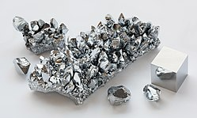

Название, символ, номер Хром / Chromium (Cr), 24
Атомная масса
(молярная масса) 51,9961(6) а. е. м. (г/моль)
Электронная конфигурация [Ar] 3d5 4s1
Радиус атома 130 пм
Химические свойства
Ковалентный радиус 118 пм
Радиус иона (+6e)52 (+3e)63 пм
Электроотрицательность 1,66 (шкала Полинга)
Электродный потенциал −0,74
Степени окисления 6, 3, 2, 0
Энергия ионизации
(первый электрон) 652,4 (6,76) кДж/моль (эВ)
Термодинамические свойства простого вещества
Плотность (при н. у.) 7,19 г/см³
Температура плавления 2130 K (1856,9 °C)
Температура кипения 2945 K (2671,9 °C)
Уд. теплота плавления 21 кДж/моль
Уд. теплота испарения 342 кДж/моль
Молярная теплоёмкость 23,3 Дж/(K·моль)
Молярный объём 7,23 см³/моль
Кристаллическая решётка простого вещества
Структура решётки кубическая
объёмноцентрированая
Параметры решётки 2,885 Å
Температура Дебая 460 K
Прочие характеристики
Теплопроводность (300 K) 93,9 Вт/(м·К)